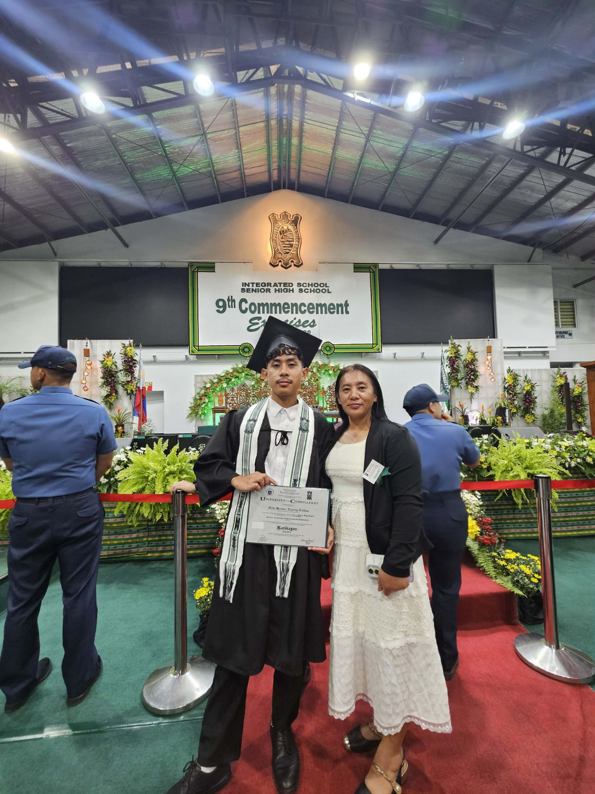

Networking
Learning how devices, systems, and networks communicate and work together.
IT STUDENT · ASPIRING DEVELOPER
BSIT Student · Network & Security
I'm a Bachelor of Science in Information Technology student at the University of the Cordilleras. I enjoy exploring how technology works, building practical projects, and developing skills that can solve real-world problems.
01 / ABOUT ME
My educational journey began at San Vicente Elementary School and continued through junior high school, senior high school, and now college at the University of the Cordilleras.
Along the way, I developed an interest in technology and practical problem-solving. My STEM experience gave me opportunities to work on projects involving technology and robotics.
Outside the classroom, I also enjoy cycling. It has taught me the value of patience, consistency, and setting goals.
02 / WHAT I'M EXPLORING
These are areas I'm interested in developing through my studies and personal projects.
Learning how devices, systems, and networks communicate and work together.
Understanding digital security, safe systems, and protecting information.
Practicing problem-solving through code and exploring Python and Java.
Applying classroom concepts through prototypes, web development, and technology.
03 / EDUCATION
Completed elementary education and began my academic journey.
Completed junior high school and received a Loyalty Award.
Completed the STEM strand and developed an interest in science and technology.
Pursuing Bachelor of Science in Information Technology, specializing in Network and Security.
04 / PROJECTS
An Arduino Uno-based Brushbot cleaning robot. The prototype uses a cleaning brush, a DC motor, and an Arduino-controlled motor system to create vibration and movement across tiled surfaces.
This portfolio will continue to grow as I complete more coursework, experiments, and personal projects.

05 / FAMILY
Growing up, my mother has been a steady and grounding presence through every stage of life, from my earliest school days to finishing high school.
She has provided guidance and a supportive environment behind the scenes, helping me navigate challenges and celebrate milestones along the way.
06 / GET IN TOUCH
Thank you for taking the time to explore my portfolio. You can visit my GitHub profile to see more of my work and learning progress.